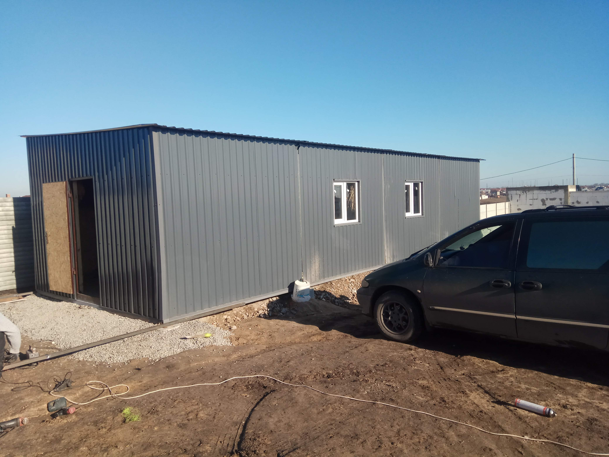
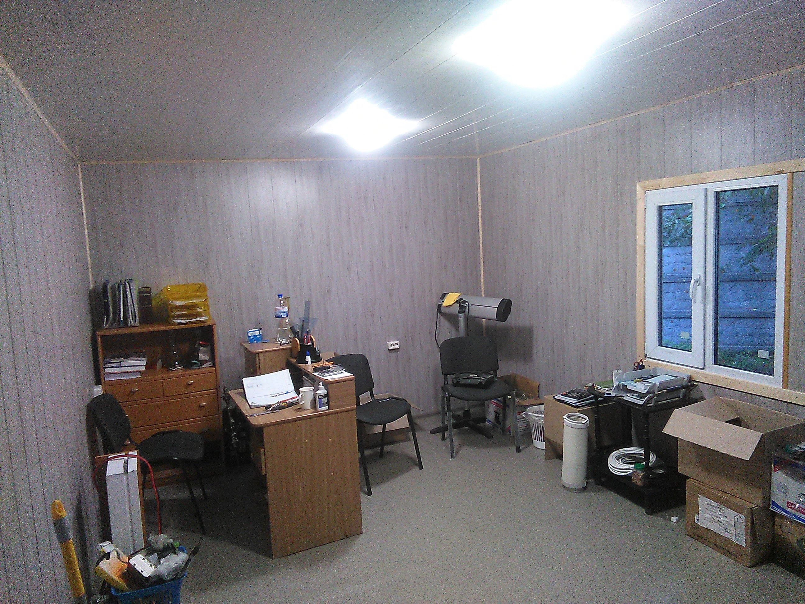

Modulbau für kleine Betriebe: Werkstatt, Lager und Büro effizient planen
Viele kleine Unternehmen brauchen schnell mehr Platz – für Werkstatt, Lager oder ein separates Büro. Klassische Bauten sind teuer und dauern lange. Modular gebaute Werkstattcontainer oder kleine Hallen sind eine attraktive Alternative: flexibel, erweiterbar und sofort einsatzbereit. Hier zeigen wir, wie man ein solches Projekt richtig plant.
1. Warum Modulbau für KMU sinnvoll ist
Für viele Gewerbebetriebe zählt vor allem eines: sofort nutzbarer Raum. Modulbau bietet:
- Kurze Bauzeit: Die Module werden vorgefertigt, vor Ort nur montiert.
- Erweiterbarkeit: Bei mehr Platzbedarf einfach ein weiteres Modul anfügen.
- Kostensicherheit: Fixe Preise, wenig Überraschungen.
- Vielseitigkeit: Werkstatt, Büro, Materiallager oder Kombinationen.
2. Welche Nutzung soll das Modul erfüllen?
Der geplante Zweck bestimmt die Ausführung:
- Werkstatt: Stromkreise, Beleuchtung, Lüftung, robuste Böden.
- Lager: Tragfähigkeit, trockene Umgebung, Regalsysteme.
- Büro: Dämmung, Fenster, Heizung/Kühlung, ruhige Atmosphäre.
- Kombination: oft zwei Module – eines für Arbeiten, eines für Administration.
3. Technische Planung: Strom, Dämmung und Statik
3.1 Elektroinstallation
Der wichtigste Punkt bei Werkstattmodulen. Aus der Praxis empfehlen wir:
- Mehrere 230-V-Kreise und optional 400-V-Anschluss
- LED-Lichtbänder statt einzelner Lampen
- Aussenanschlüsse für Maschinen oder Ladegeräte
3.2 Dämmung
Für Büromodule unverzichtbar, aber auch in Werkstätten sinnvoll. Gängig sind:
- Mineralwolle in Holzrahmen (günstig, bewährt)
- PUR/PIR-Platten für hohe Dämmwirkung bei wenig Platz
3.3 Boden und Tragfähigkeit
Schwerere Maschinen erfordern verstärkte Bodenplatten und Auflager. Für Lager empfehlen wir eine klare Lastplanung – viele KMU unterschätzen das Gewicht von Materialpaletten oder Geräten.
4. Büro + Werkstatt: die ideale Kombination
Besonders beliebt bei kleinen Betrieben ist eine Lösung aus zwei Modulen: vorne Büro, hinten Werkstatt oder Lager. Durch getrennte Bereiche arbeitet man ruhiger und hat trotzdem kurze Wege.
5. Kosten – womit sollte man rechnen?
Die Preise hängen von Ausstattung und Grösse ab. Als grobe Orientierung:
- Büromodul: 12’000–25’000 CHF
- Werkstattmodul: 15’000–30’000 CHF
- Kombination aus zwei Modulen: 28’000–50’000 CHF
Wichtig: Erdarbeiten, Fundamente, Anschlüsse und Lieferung kommen zusätzlich dazu.
6. Fazit: schneller Raum für wachsende Betriebe
Modular gebaute Werkstätten und Büros sind eine effiziente Lösung für KMU, die schnell und bezahlbar zusätzlichen Raum benötigen. Mit guter Planung entsteht ein funktionaler, langlebiger Arbeitsbereich – exakt auf den Betrieb abgestimmt.